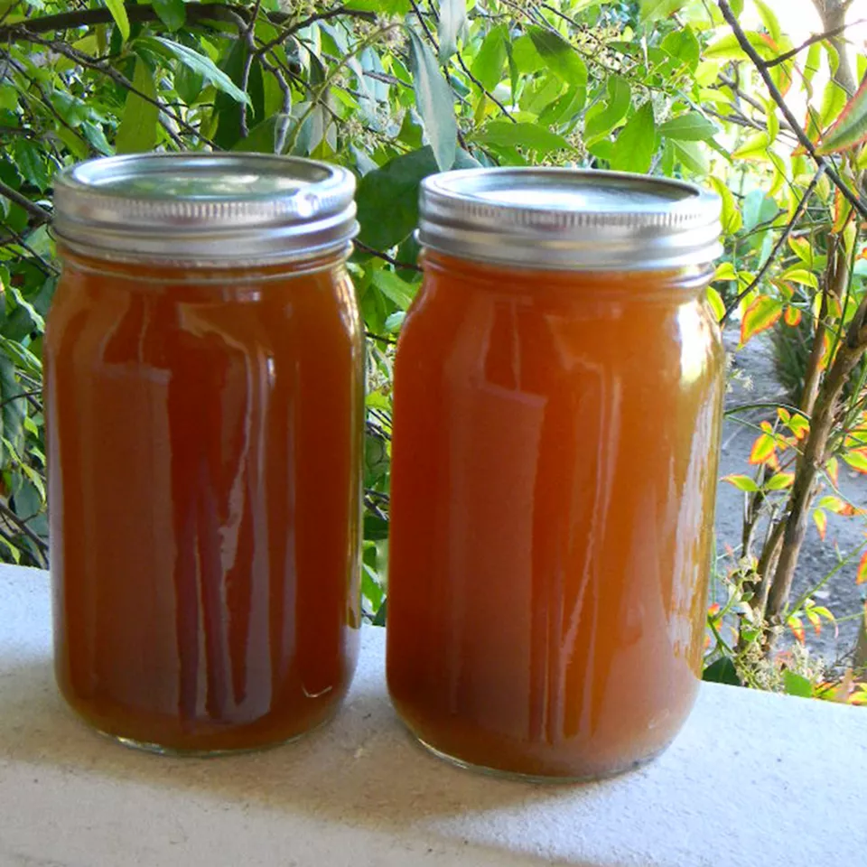

Start this flavorful chicken broth by roasting the chicken first,
then use all the dark meat to fortify the broth.
These are the ingredients you'll need to make this umami chicken broth:
Chicken: 1 (3½) pound chicken, giblets removed
Onion: 1 onion, peeled and quartered
Celery: 1 rib celery, cut in chunks
Garlic: 3 cloves garlic, lightly smashed
Salt: 2 teaspoons kosher salt
ketchup: 1 tablespoon ketchup
Water: 2 quarts cold water, or more as needed
Step 1
Preheat the oven to 400 degrees F (200 degrees C).Step 2
Place chicken, onion, and celery in a Dutch oven. Sprinkle salt over the top of the chicken.Step 3
Roast chicken, uncovered, in the preheated oven until chicken is no longer pink inside, the skin is browned, and an instant-read thermometer inserted into the thickest part of a thigh reads 160 degrees F (70 degrees C), 45 minutes to 1 hour.Step 4
Transfer chicken to a plate until cool enough to handle. Once cool, pick the meat from the bones; set aside chicken breast meat in a bowl for another purpose. Cover bowl of breast meat with plastic wrap and refrigerate. Discard chicken skin.Step 5
Remove chicken fat from Dutch oven, leaving the brown flavor bits in the bottom of the Dutch oven. (See note for reserving drippings if desired.)Step 6
Place the Dutch oven over medium-high heat. Return chicken bones and dark meat from drumsticks and thighs to the pot. Add garlic cloves, ketchup and cold water. Bring to a boil, and use a spoon to scrape up and dissolve the brown flavor bits from the bottom of the Dutch oven. Reduce heat to low and simmer for 3 hours, adding more water if needed to retain same level.Step 7
As broth simmers, occasionally skim off and discard any foam that rises to the surface.Step 8
Remove and discard bones, meat and vegetables. Strain broth through a fine mesh sieve to serve or use in recipes.  hope you enjoy it :3